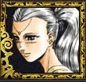

Récits Légendes de Kirin Tor Personnages Célébrités Guildes
Outils Calendrier Calendrier Illustré Mod d'interface
Informations Historiens FAQ Liens Crédits
Les légendes de Kirin Tor
psychee
Mail : psycheeange@gmail.comSite : http://epee.ishara.free.fr
MSN : psychee_ange@hotmail.com
==> Afficher les personnages de psychee
Nausicaâ
 Age : 16
Age : 16
Sexe : Femme
Race : Humain
Faction : Alliance
Formation : Prêtre
Description : La Légende de lEpée d'Ishara: http://epee.ishara.free.fr
"La légende pour les uns est toujours une réalité pour les autres"
Taleyran Trausanal, chroniqueur de la légende.
Ourlée de mystères, la Légende de l'Epée d'Ishara se conte, de loin en loin, par monts et par vaux, à travers tout Azeroth. Puisant ses récits à travers les siècles, nourrie par les mythiques civilisations, alimentée par des faits incertains, grandie par les poètes et les écrivains, cette histoire fait maintenant surface. Alors qu'une aube timide se lève sur un monde ravagé par les guerres, les témoins inconscients de la plus grande des chroniques voient ou entendent parler d'une jeune fille, ni elfe, ni humaine, porteuse d'un étrange fardeau. Elle n'est jamais là où on prétend l'avoir aperçu, mais elle attise la plus grande curiosité ou les plus grandes convoitises. Car si cette demoiselle est la détentrice de l'Epée d'Ishara, alors les plus terribles prédictions divines, fomentent, dans son sillage, le plus sombre des avenirs à moins qu'il ne s'agisse de l'aboutissement d'une malédicton millénaire.
Si vous la voyez un jour, et si vous êtes assez courageux ou aventureux pour la suivre, risquez vous à la contempler, et rejoignez la légende.
Présentation
La légende de lEpée dIshara est avant tout un texte à quatre mains, né dun humble background que javais crée pour Nausicaâ, et qui séduisit et inspira Lendraste, mon complice en ces lieux.
Mais la Légende de lEpée dIshara est surtout une aventure ouverte, sur le serveur Kirin-Tor du MMORPG World of Warcraft.
Sur ce serveur, naissent, vivent, évoluent, et meurent des centaines dhistoires, toutes plus belles les unes que les autres, certaines intimes, dautres formidables. Celle que nous contons ici est pour vous.
Nous vous invitons à un voyage : venez vous laisser envoûter par la légende, découvrez ses acteurs, ces personnages qui vivent en ce moment même cette étrange histoire, et venez y participer, entrer dans laventure, et venez découvrir le secret de lEpée dIshara.
Comme tout se passe avant tout autour dun jeu online, cette aventure na pas de « scénario ». Cest une intrigue dont les éléments ont été posés, et que vous pouvez découvrir ici, et qui ensuite vit en fonction des actes de chacun. Nimporte quel personnage peut y entrer en y créant sa propre porte, y apportant en même temps lhistoire de son personnage et ses propres intrigues. Cest à chaque personnage que lhistoire prend un nouveau tour, et senrichit. Cest à chacune de vos créations que lhistoire grandira, jusquà son dénouement.
Bien sûr, cela veut dire que rien nest réellement déjà écrit, et aussi que cette histoire durera longtemps. Lempressement nest pas la règle, et le secret de lEpée dIshara sera bien difficile à découvrir, ou à arracher à ceux qui le possèdent.
Soyez les bienvenus, et découvrez cette aventure qui ne fait que commencer!

Plus d'infos sur Nausicaâ >>>
Lire les 31 récits de Nausicaâ >>>
Eôwyn
Age : 154Sexe : Femme
Race : Elfe
Faction : Alliance
Formation : Chasseur
Description : Elle se tordit dans un spasme atroce, et la présence dun arbre sur le chemin lui évita lhumiliation de finir à genoux sur le sol. Accrochée au tronc, les doigts se figeant dans lécorce, elle laissa échapper un filet dun sang noir et malsain, dans un râle de douleur contenue.
Le poison avançait dans ses veines, et la dévorait lentement. Ses poumons étaient déjà atteint, et elle ne chercher plus à estimer le temps quil lui restait. Peut-être quelques jours, peut-être quelques semaines si elle trouvait des drogues pour ralentir le mal
La corruption pouvait passer des animaux aux humains, et elle avait atteint ses veines depuis longtemps, dévorant lentement son corps sans espoir de rémission. Et elle nen avait pas cherché ou demandé. Cette mort annoncée était un signe, le même qui lavait conduit à poursuivre la dernière descendante des Ishara pour mettre fin à des millénaires de cauchemars.
Lâme de sa mère hurlait quelque part dans lépée, à linstar des dizaines de milliers dâmes fauchées par larme impie. Et elle avait passé du temps avant de retrouver assez de courage pour se lancer dans cette chasse, et en apprendre assez sur lEpée pour savoir quelle était la seule et unique chose à faire.
Ladolescente qui détenait lépée et en était la dernière Porteuse était innocente des crimes commis par lépée. Mais Eôwyn avait appris et finit par comprendre que la plupart des Porteuses avaient plus ou moins sciemment employé lépée, qui en échange de chaque âme volée, leur avait rendu la vie. LEpée dIshara était animée de désirs et de buts, et la Porteuse céderait un jour ou lautre, et faucherait dautres âmes.
Jusquà ce quun jour le pouvoir de larme soit libéré dans un cataclysme que lelfe avait appris à estimer : larme impie pourrait être prise comme source de pouvoir par un arcaniste profane, mais nulle ne pourrait jamais contrôler tant de puissance. Il nen resterait quun déchaînement de cette même corruption qui la dévorait désormais, et qui affligerait encore une fois le monde
Eôwyn navait trouvé aucun moyen, aucun écrit, aucune piste pour détruire lépée. Larme était liée à la vie de sa Porteuse, et à son sang, cétait tout ce quelle savait : il fallait le sang des descendants dIshara pour libérer le pouvoir de larme et une fois sans ce sang, larme ne pourrait plus jamais menacer le monde, ne resterait alors quà la jeter dans locéan.
La chasseuse se redressa, essuyant le sang au coin de ses lèvres, et reprit sa route. Elle pensait navoir aucunes chances datteindre la Combe de Nijel, le dernier lieu où avait jamais été vue Nausicaâ, et ne pensait pas avoir le temps et la force den repartir, et de suivre cette piste.
Mais dautres avaient entendu son appel, et partaient en chasse, et elle avait même été jusquà sabaisser à payer des mercenaires pour trouver et abattre la Porteuse.
Peut-être que tout ceci ne serait pas vain et quelle pourrait mourir en croyant avoir tout fait pour lâme de sa mère.
Plus d'infos sur Eôwyn >>>
Lire le récit de Eôwyn >>>
Naemesis
Sexe : FemmeRace : Humain
Faction : Alliance
Formation : Paladin
Plus d'infos sur Naemesis >>>
Lire les 3 récits de Naemesis >>>
==> Voir la galerie d'images de psychee